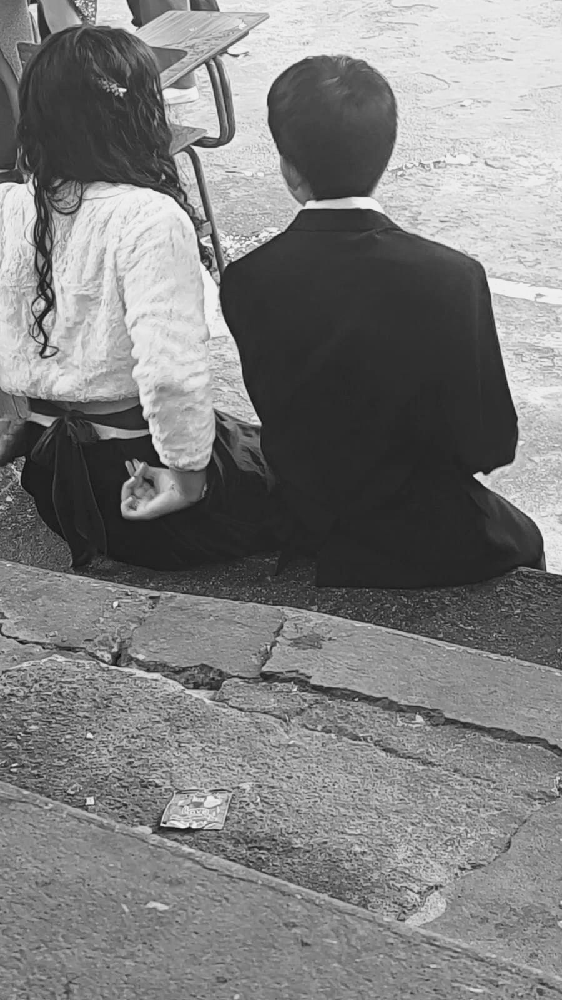
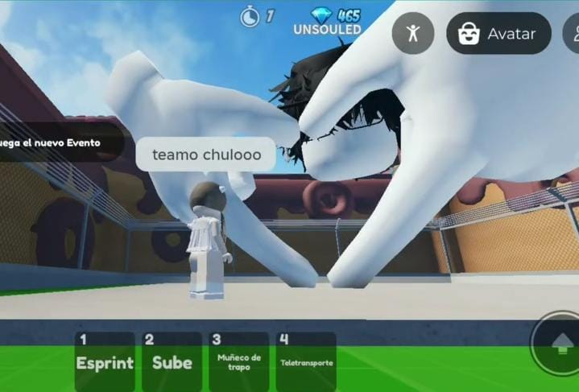

Pero primero, tienes que abrirlo.
Esa tarde del 5 de septiembre no pensé que llegaría a ser tan especial en mi vida. Creí que sería un día normal y olvidable;nunca me imaginé que encontraría al amor de mi vida en un baile que,para mí,terminó convirtiéndose en un momento inolvidable. iba sin ningún pensamiento de bailar y mucho menos de encontrar a alguien. Por eso fue tan inesperado que llegaras a mí y comenzáramos a bailar. Esa tarde contigo fue muy especial para mí. Desde ese día no te pude olvidar;te veías tan linda y,cuando llegó el momento de despedirno,pensé que sería la última vez que te vería, que todo quedaría simplemente en un baile. Pero me gustaste desde ese día y tuve el valor de escribirte. Sin saber todo lo que vendría después,nunca imaginé que llegaríamos a construir todo esto que tenemos hoy.

Al principio nuestras conversaciones eran bastante básicas. Yo ni siquiera sabía muy bien cómo hablarte o cómo sacar nuevos temas, pero tuvimos la suerte de coincidir en algo: Roblox. Empezamos a jugar y, sin darnos cuenta, esos juegos se convirtieron en una de las primeras formas en las que realmente comenzamos a conocernos. Jugamos tantos que todavía recuerdo algunos con mucho cariño: los obbys, el juego del ciervo, el de la rueda que hizo que habláramos muchísimo… y tantas noches en las que terminábamos desvelándonos hasta las 2 o 3 de la mañana solamente por seguir hablando y jugando juntos. Desde el primer día me gustaste, pero cada vez encontraba una razón más para enamorarme de ti. En la escuela casi no hablábamos al principio, pero en las salidas empezamos a acercarnos de la nada. Me hablabas, te despedías de mí y, a veces, simplemente me mirabas con esos ojos tan lindos que terminaron enamorándome todavía más. Me encantaba hablar contigo, aunque fueran solamente unos minutos. Me enamoré de lo intensa que eres, de lo linda y atenta que puedes ser, de cómo jugabas, de cómo te reías y de cómo seguías mis bromas. Contigo me sentía seguro. Sentía que conectábamos de una manera muy bonita, que coincidíamos en muchas cosas y que podía disfrutar cualquier momento, por pequeño que fuera, si era contigo. Y pasó todo tan rápido que hasta a mí me sorprendió. En tan solo una semana ya estabas constantemente en mi mente. Me emocionaba verte cada tarde y me parecía imposible no fijarme en lo hermosa que te veías. Tu llegada a mi vida fue completamente inesperada, pero también fue muy fácil enamorarme de ti. Llegó un punto en el que ya no quería seguir guardándome todo lo que sentía. Quería poder quererte como realmente quería, demostrarte todo ese cariño que había ido creciendo dentro de mí y dejar de imaginar cómo sería tenerte a mi lado. Entonces llegó la tarde del 12 de septiembre. Ese día te pedí que fueras mi novia, y puedo decir que fue uno de los días más felices de mi vida. Cuando me abrazaste y me besaste por primera vez, sentí algo que todavía recuerdo perfectamente: no quería que ese momento terminara y no quería alejarme de ti. En ese momento entendí que aquella persona que había conocido inesperadamente en un baile ya se había convertido en alguien con quien quería compartir muchísimo más que unos cuantos días. Quería estar contigo. Y todavía quiero seguir estando contigo por todo el tiempo que la vida nos permita.

Amo todo de ti: tus ojos, tu boca, tu sonrisa, tu risa, tus rizos, la forma en que me tratas, tus ocurrencias, tu manera de ser y lo amable y considerada que eres. Amo cada una de esas cosas que te hacen ser tú. Has cambiado tantas cosas en mí. Me has ayudado a cambiar mi manera de expresarme, a ser más yo contigo, a aprender a enseñarte lo que siento y no solamente decirlo. Quiero seguir siendo mejor por ti y dar todo lo que pueda, porque quiero que seas tú con quien comparta mi vida. Amo todas las anécdotas que hemos creado y cada una de las ocurrencias que nos han pasado juntos. Algunas veces, en el momento, me muero de pena, pero cuando las recuerdo termino enamorándome todavía más de ti. Porque, a pesar de todas nuestras tonterías, tú te ríes, las compartes conmigo y sigues a mi lado. Hemos tenido problemas, como cualquier pareja, pero siempre encontramos la manera de solucionarlos. Nunca duramos demasiado tiempo peleados porque, de alguna forma, siempre terminamos buscándonos y arreglando las cosas. Y creo que eso también forma parte de lo que somos. Me siento seguro contigo y cada día me das más confianza, porque sé que estás para mí. En estos 385 días contigo he llegado a amar todo lo que somos: todo lo que hemos hecho juntos, la manera en que nos tratamos, cómo solucionamos las cosas y la forma en que sigues demostrándome tu amor. Nunca quiero separarme de ti. Quiero seguir contigo, seguir mejorando, cumplir todo aquello que nos propongamos y apoyarnos mutuamente como siempre lo hemos hecho. Quiero seguir teniendo más momentos contigo, incluso esas anécdotas vergonzosas que algún día podremos recordar y de las que seguramente terminaremos riéndonos juntos. Quiero celebrar todas las fechas especiales a tu lado, seguir creando recuerdos y estar tan unidos que nuestra historia se quede con nosotros hasta donde nos dé la luz de la vida. Y después de todo... Siempre voy a amar aquel 5 de septiembre. Ese baile que para mí se volvió inolvidable, porque fue el comienzo de nosotros. Nunca imaginé que una tarde cualquiera terminaría convirtiéndose en el inicio de una historia que hoy significa tanto para mí. Y si pudiera volver a aquel día, sin saber todo lo que vendría después, volvería a elegir ese baile. Volvería a elegir encontrarte a ti.